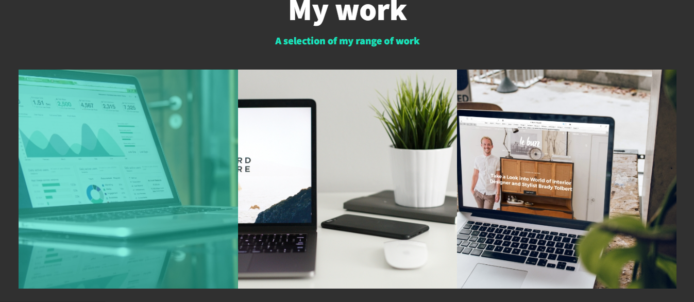
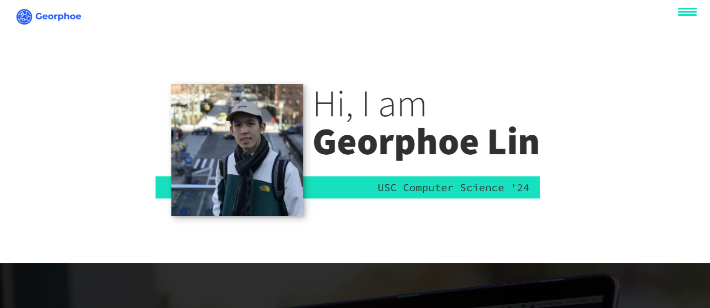

HTML, CSS, and JavaScript

Welcome to my portfolio website, which I built during the summer of 2023! This website showcases my skills in software development, website development, and data visualization, while providing a flexible and expandable platform to present my portfolio, services, and contact information. The primary audience for this portfolio website is employers seeking individuals with computer science skills. By showcasing my work and capabilities, I aim to demonstrate my proficiency in software development, web development, and data visualization, attracting potential job opportunities. Rest assured that this website will be regularly updated with new additions to further exemplify my evolving skills and showcase my latest projects.
The website is built using HTML, CSS, and JavaScript, combining these technologies to create a seamless user experience. The HTML structure is organized into individual sections, including a header, introduction, services, about me, my work, and a footer. Each section is beautifully styled using CSS to enhance visual appeal and usability. This approach allows visitors to navigate through the website easily and gain a comprehensive understanding of my background, skills, and achievements. As I continue to refine and expand my portfolio, this website will serve as a captivating gateway to witness my ongoing growth and the exceptional work I produce in software development, web development, and data visualization.
To ensure a strong foundation to build this website, I completed various online courses, including "Learn HTML and CSS," "Learn JavaScript," and "Build and Deploy Your Portfolio" on Scrimba. These courses equipped me with the necessary knowledge and skills to create a polished and professional portfolio website. I invite you to explore my portfolio, learn more about the services I offer, and get in touch with me using the provided contact information. Thank you for visiting, and I look forward to connecting with you soon! Keep checking back for updates as I regularly enhance this platform with new projects, demonstrating my continuous dedication to honing my craft and delivering exceptional web, software, and data solutions.